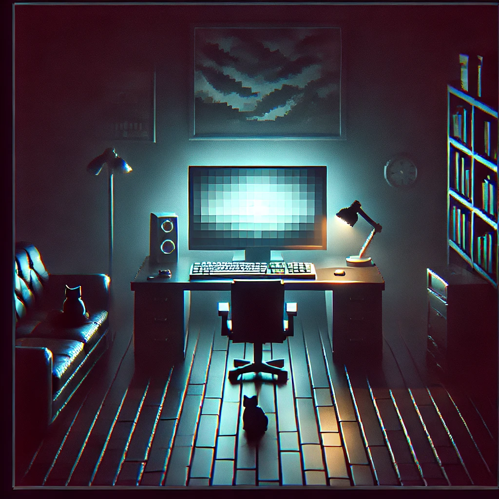

Welcome to The Broadcast Paradox, DANGER! DO NOT CONTINUE WITHOUT SECURITY MEASURES
An enigmatic transmission has been detected, revealing fragments of a message. It is up to you to decipher the anomalies, recover the audio, and uncover the hidden meaning behind the broadcast.

Game Features:
- Scan and monitor radio signals to identify hidden anomalies.
- Decrypt audio fragments.
- Work together or compete with others to recover the full message.
- Upgrade your tools to enhance signal detection and decryption speed.
- Go to Demo
Are you ready to piece together the mysterious transmission and solve the ultimate puzzle?